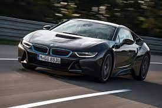

BMW define al BMW i8 como “el coche más innovador que jamás hayamos creado”. Este deportivo lleva tiempo ya sorprendiendo a propios y extraños con una concepción y un aspecto que parece llegado del futuro. Cuenta con un diseño muy radical, puertas de tijera y una mecánica híbrida-enchufable de 374 CV, punto clave del concepto del modelo alemán.
Su diseño es, sin lugar a dudas, el más innovador y futurista de cuantos podemos encontrar en la actual gama del fabricante bávaro. Su frontal bajo y agresivo combina a la perfección con unas líneas muy marcadas, terminando en una zaga con superficies flotantes y trazos musculosos, acordes al planteamiento del modelo.
BMW i8
Las prestaciones del BMW i8 no se quedan atrás. En el sprint de 0 a 100 km/h es tan rápido como un BMW M2, lo realiza en solo 4,4 segundos. Pero a la hora de ahorrar combustible es tan eficiente como el que más, pudiendo recorrer hasta 55 kilómetros en modo eléctrico y presumiendo (según homologación oficial para híbridos enchufables) de sus 1,9 litros/100 kilómetros. Este grupo propulsor sirve, de hecho, para otros modelos del fabricante como el BMW 225xe o el MINI Cooper SE Countryman, aunque con menor índice de potencia y prestaciones.
7
FOTOS
VER TODAS
Foto de - BMW i8
Este deportivo está construido con los mejores materiales, pensando siempre en la ligereza y el rendimiento. Cuenta con un chasis de aluminio y una jaula de seguridad y carrocería ensambladas en aluminio y fibra de carbono reforzada con materiales plásticos. Para entender hasta que punto ha llegado la “obsesión” de BMW con el aligeramiento del BMW i8, basta mencionar que la estructura que porta el salpicadero es de magnesio.
BMW i8
El interior del BMW i8 bebe de la tendencia futurista del exterior, ofreciendo un salpicadero lleno de curvas y líneas fluidas, con una instrumentación 100% digital y un completo sistema multimedia. Su estructura 2+2 permite acoger tras los asientos delanteros dos pequeñas plazas de emergencia que nos sacarán de un apuro, aunque no son aptas para largos viajes o personas voluminosas.
El BMW i8 aprovecha su mecánica híbrida enchufable para desarrollar todas sus prestaciones. Cuenta con un motor térmico, un modesto –pero sorprendentemente potente– tricilíndrico sobrealimentado de 1.500 cm3 que apoya al eléctrico. Este motor es el mismo que propulsa a otros modelos como el MINI Cooper. En modo combinado contamos con 374 CV de potencia que se distribuyen inteligentemente sobre las cuatro ruedas, actuando el motor térmico sobre el tren posterior con 231 CV y el eléctrico sobre el delantero con 131 CV. El precio del BMW i8 Coupé es de 145.200 euros.